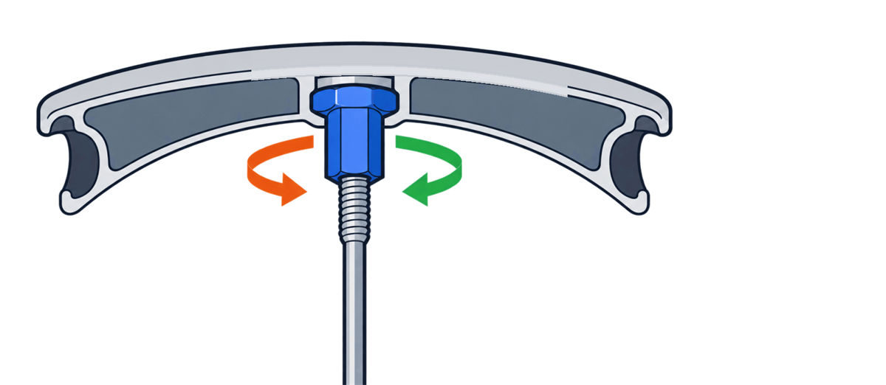

Mark the runout areas — the calculator tells you which spokes to tighten and which to loosenRU
Free bicycle wheel truing calculator: mark where the rim has moved sideways or bulges outwards, and get a spoke-by-spoke plan — which spokes to tighten and which to loosen.
How to use / method
Fix the wheel in a truing stand or in an upside-down frame.
The drive side (freewheel / cassette) is the right side (R). Spokes going to the right hub flange are marked R, to the left — L.
Line up the top of the diagram with spoke #1: find it on the wheel and agree that it sits at 12 o'clock. Numbering goes clockwise.
Find the runout areas with chalk or a gauge. Click the matching segment on the diagram (you can drag to mark several in a row):
• red — bulges right; blue — bulges left (this is the wobble, or “8”);
• orange — bump outwards; purple — dent inwards (radial runout).
Use the “What to do” table: for every spoke it shows tighten (+) or loosen (−) and by how much.
Turn the nipples (clockwise to tighten, counter-clockwise to loosen), check the wheel again and repeat the marking. Two or three passes are usually enough.
The wobble rule in plain words: where the rim has moved to the right, tighten the left spoke and loosen the right one (and vice versa). The calculator finds the right spokes on both sides of the marked gap.
Which way to turn the nipple. The nipple is a nut screwed onto the end of the spoke. Only the spoke is threaded — the rim isn't: the nipple just sits in a hole and is held by its head. So tightening means screwing the nipple further onto the spoke, like a nut on a bolt.
Turn it clockwise as you look at it from the rim side (the outside of the wheel): that tightens. Counter-clockwise loosens. Always look from the rim side: from the hub side it’s mirrored.
Not sure? Turn one nipple 1/4 turn clockwise — the spoke should sound higher. If it sounds lower, you turned the wrong way. The exact number of turns depends on the wheel, so the values are a guide.

↻ clockwise — tighten↺ counter-clockwise — loosen
Caveats: the model assumes the spokes alternate L/R (a standard build). If your wheel is unusual (2:1, radial lacing, etc.), treat the result as a hint about the direction only.
bulges right (toward R flange)bulges left (toward L flange)bump outwards (radial)dent inwardsspoke on the left flange (L)spoke on the right flange (R)+tighten the nipple−loosen the nipple
Settings
Marking
Strength
What to do
Spoke
Side
Action
Turn
Turn: clockwise to tighten, counter-clockwise to loosen (the nipple screws onto the spoke). Values are approximate: adjust in small steps (1/4–1/2 turn), then measure again and repeat. Never loosen spokes until they rattle.